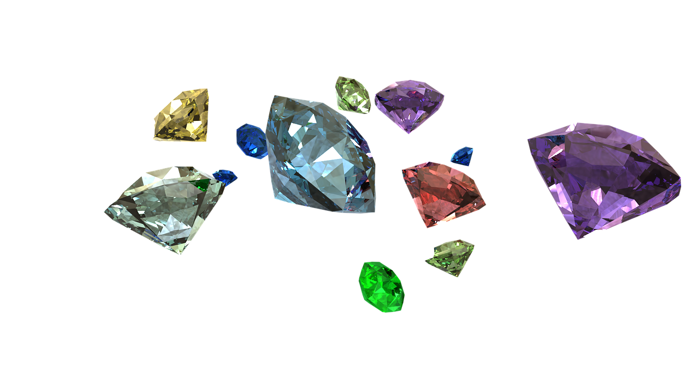

Your Guide to Gemstones
What is a jewel?
A jewel, also known as a gemstone, is generally defined as any sort of mineral that features eyecatching amounts of beauty, durability, and rarity. They are mostly used for necklaces, earrings, bowls, vases, or other forms of personal adornment. Oftentimes, they are enhanced somehow, whether it is through cutting or polishing. Most jewels come from the crystals of minerals, although a few of them, such as amber or obsidian, come from other sources. Precious metals or items that are carved from minerals, however, are not gemstones.
